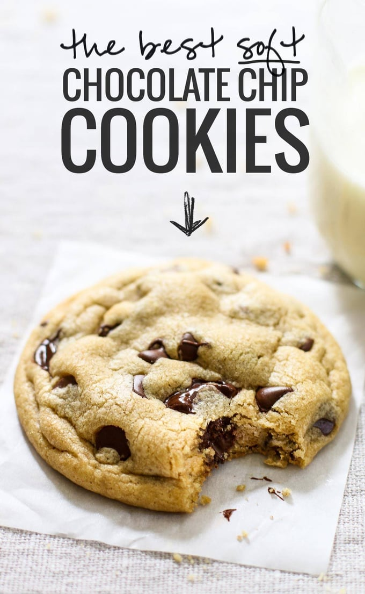

Chocolate chip cookies

Description
These are THE BEST soft chocolate chip cookies! No chilling required. Just ultra thick, soft, classic chocolate chip cookies!
Ingredients
- 8 tablespoons of salted butter
- 1/2 cup white sugar (I like to use raw cane sugar with a coarser texture)
- 1/4 cup packed light brown sugar
- 1 teaspoon vanilla
- 1 egg
- 1 1/2 cups all purpose flour
- 1/2 teaspoon baking soda
- 1/4 teaspoon salt (but I always add a little extra)
- 3/4 cup chocolate chips (I use a combination of chocolate chips and chocolate chunks)
Steps
- Preheat the oven to 350 degrees. Microwave the butter for about 40 seconds to just barely melt it. It shouldn’t be hot – but it should be almost entirely in liquid form.
- Using a stand mixer or electric beaters, beat the butter with the sugars until creamy. Add the vanilla and the egg; beat on low speed until just incorporated – 10-15 seconds or so (if you beat the egg for too long, the cookies will be stiff).
- Add the flour, baking soda, and salt. Mix until crumbles form. Use your hands to press the crumbles together into a dough. It should form one large ball that is easy to handle (right at the stage between “wet” dough and “dry” dough). Add the chocolate chips and incorporate with your hands.
- Roll the dough into 12 large balls (or 9 for HUGELY awesome cookies) and place on a cookie sheet. Bake for 9-11 minutes until the cookies look puffy and dry and just barely golden. Warning, friends: DO NOT OVERBAKE. This advice is probably written on every cookie recipe everywhere, but this is essential for keeping the cookies soft. Take them out even if they look like they’re not done yet (see picture in the post). They’ll be pale and puffy.
- Let them cool on the pan for a good 30 minutes or so (I mean, okay, eat four or five but then let the rest of them cool). They will sink down and turn into these dense, buttery, soft cookies that are the best in all the land. These should stay soft for many days if kept in an airtight container. I also like to freeze them.